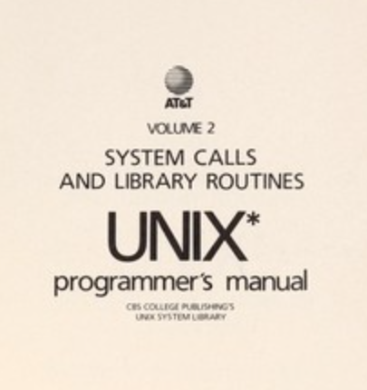
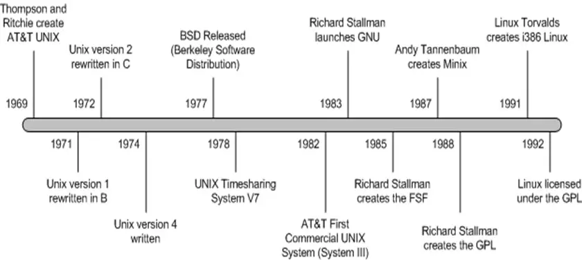

|  |
UNIX is an operating system originally developed at AT&T. It was the first operating system that allowed programs to be both developed and run in a single environment, relieving programmers from the tedious work of mediums such as punch cards. It came bundled with C, the first programming language that was hardware agnostic. Programs no longer had to be rewritten to work on another computer. |
However an operating system is one of the most involved pieces of software to develop, leading most versions of UNIX to be unavailable to programmers without purchasing a license. In response to this, Richard Stallman founded the GNU project to develop a free version of UNIX. |
 |
|  |
Throughout the 80s, the project began creating clones of the most popular tools that the operating system employed. What was different about these tools was that the source code was readable by anyone, allowing programmers to learn from and improve the tools communally over the early internet. |
The project was missing a reliable kernel however, the central piece of the OS that acts as an intermediary between the hardware and software. Their luck changed however in 1991, when a young Finnish programmer named Linus Torvalds was able to create an open source kernel called Linux that could use all of GNU's tools. Many project members demand that Linux always be referred to as GNU/Linux to give credit to the large codebase that every Linux installation uses. |
 |